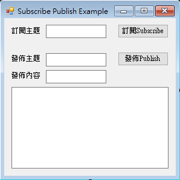

實踐大學聯網感測實作
開發環境This project is maintained by yazelin
一日之所需 百工斯為備

介面設計參考圖
// including the M2Mqtt Library
using uPLibrary.Networking.M2Mqtt;
using uPLibrary.Networking.M2Mqtt.Messages;//在public partial class Form1 : Form { } 中加入下面3個宣告
delegate void SetTextCallback(string text);//用來更新UIText 的Callback
MqttClient client;//MqttClient
string clientId;//連線時所用的ClientID
//當視窗載入時觸發
private void Form1_Load(object sender, EventArgs e)
{
client = new MqttClient("localhost");//MQTTServer在本機
client.MqttMsgPublishReceived += client_MqttMsgPublishReceived;//當接收到訊息時處理函式
clientId = Guid.NewGuid().ToString();//取得唯一碼
client.Connect(clientId);//建立連線
}//按下訂閱按鈕時觸發
private void btnSubscribe_Click(object sender, EventArgs e)
{ //若有輸入訂閱主題
if (txtTopicSubscribe.Text != "")
{
//自訂完整主題名稱
string Topic = "IoT/" + txtTopicSubscribe.Text + "/test";
//設定主題及傳送品質 0 ( 0, 1, 2 )
client.Subscribe(new string[] { Topic }, new byte[] { 0 }); // we need arrays as parameters because we can subscribe to different topics with one call
//清空接收文字框
SetText("");
}
else
{
MessageBox.Show("必需輸入訂閱主題!");
}
}// this code runs when a message was received
void client_MqttMsgPublishReceived(object sender, MqttMsgPublishEventArgs e)
{
//收到的訊息內容以UTF8編碼
string ReceivedMessage = Encoding.UTF8.GetString(e.Message);
// we need this construction because the receiving code in the library and the UI with textbox run on different threads
//將訊息寫進接收訊息框內，但因為MQTT接收的執行緒與UI執行緒不同，我們需要呼叫自訂的SetText函式做些處理
SetText(ReceivedMessage);
}
//當不同執行緒在UI執行緒上需要更新數值時的處理
private void SetText(string text)
{
// we need this construction because the receiving code in the library and the UI with textbox run on different threads
if (this.RecText.InvokeRequired)
{ //如果需要Invoke
//設定CallBack,Invoke
SetTextCallback d = new SetTextCallback(SetText);
this.Invoke(d, new object[] { text });
}
else
{
//若不需要Invoke直接設定其值
this.RecText.Text = text;
}
}//檔視窗關閉時
private void Form1_FormClosing(object sender, FormClosingEventArgs e)
{
client.Disconnect();//中斷連線
}//按下發佈按鈕時觸發
private void btnPublish_Click(object sender, EventArgs e)
{
//若有輸入發佈主題
if (txtTopicPublish.Text != "")
{
//設定完整的發佈路徑
string Topic = "IoT/" + txtTopicPublish.Text + "/test";
//發佈主題、內容及設定傳送品質 QoS 0 ( 0, 1, 2 )
client.Publish(Topic, Encoding.UTF8.GetBytes(txtPublish.Text), MqttMsgBase.QOS_LEVEL_AT_MOST_ONCE, true);
}
else
{
MessageBox.Show("必需輸入發佈主題!");
}
}